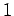
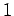
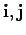
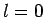
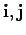
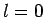

Dualizing the coalgebra map
from the sequence (9), one obtains an
epimorphism of algebras from
 to
. On a
basis element
it is given by subtracting  from
to
. On a
basis element
it is given by subtracting  from  in
and keeping
 fixed. Its
kernel is the
linear span of those basis elements which occur in the case .
This forces a recursive structure on the representation theory of these
algebras in a similar way as is known for the Birman-Murakami-Wenzl
algebras (see [BW]). In addition these epimorphisms
can be used to define an inverse limit of the symplectic
in
and keeping
 fixed. Its
kernel is the
linear span of those basis elements which occur in the case .
This forces a recursive structure on the representation theory of these
algebras in a similar way as is known for the Birman-Murakami-Wenzl
algebras (see [BW]). In addition these epimorphisms
can be used to define an inverse limit of the symplectic  -Schur algebras
in a similar way as has been worked out for the type
-Schur algebras
in a similar way as has been worked out for the type 
 -Schur algebra
in [GR, section 6.4]. It seems to be plausible that accordingly
the quantized universal enveloping algebra embeds into this inverse
limit.
-Schur algebra
in [GR, section 6.4]. It seems to be plausible that accordingly
the quantized universal enveloping algebra embeds into this inverse
limit.
Concerning analogues to the orthogonal case, note that Lemma 11.7 will not work here. Maybe, a way out is to consider coefficient functions of the symmetric algebra, i.e. the elements